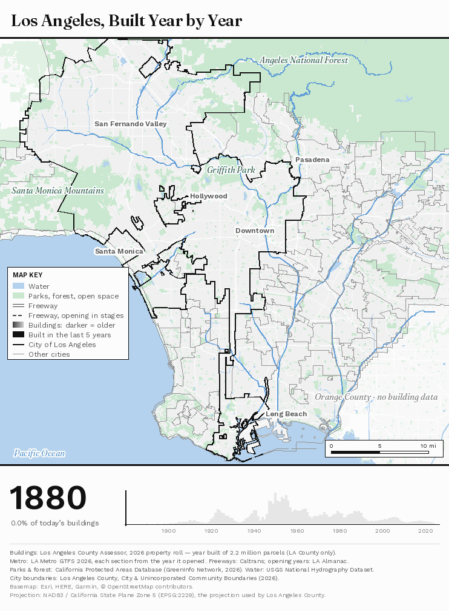

Los Angeles and the Afterlife of Utopia
The Unfinished Promises of the Modern Metropolis
Los Angeles — Prologue
During my travels along the American West Coast in 2026, visiting friends and family between Seattle and San Francisco, I decided almost on a whim to spend three days in Los Angeles. It was my first encounter with a city I had, in some sense, already visited countless times through cinema, television, literature, and the collective mythology of Hollywood. Few places arrive in our imagination so thoroughly rehearsed before we ever set foot in them; Los Angeles, perhaps more than anywhere else, exists as an image before it becomes a place.
Yet the experience of finally arriving was strangely disconcerting. Beyond the familiar iconography of palm-lined boulevards, cinematic sunsets, and the Hollywood Hills, I encountered an urban landscape of extraordinary fragmentation, where distances seemed interminable, destinations dissolved into unremarkable surroundings, and the promise of arrival rarely culminated in anything resembling fulfilment.
I found myself returning to Kevin Lynch’s The Image of the City (1960), particularly his interviews with Los Angeles residents, who described their city as “formless” and “without centers.” One interviewee captured the sensation with almost tragicomic precision, likening the experience to travelling somewhere for a long time, only to discover “there was nothing there, after all.”
Six decades later, that observation still captures something of the melancholy I encountered, as chromatic exuberance gave way to existential emptiness and extravagant promises to perpetual anticlimax. Everywhere seemed capable of becoming a film set, yet the city resisted any coherent narrative, as though its many imagined futures had never quite converged into a shared urban reality.
What first appeared as incoherence, however, gradually became more intelligible through the remarkably coherent, if irreconcilable, ambitions that produced it.

Introduction — A Landscape of Unfinished Utopias
Los Angeles has long unsettled conventional expectations of what a city ought to be. Its vast residential expanses, intermittent concentrations of density, monumental freeways, and seemingly disconnected urban fragments resist the familiar image of a metropolis organized around a recognizable centre. Yet to interpret this apparent disorder as the consequence of uncontrolled expansion would overlook a more intriguing possibility, for much of the city’s contemporary geography bears the imprint of successive, sometimes competing visions of urban perfection.
To understand Los Angeles in these terms requires a certain archaeological imagination, an ability to discern within its present geography the ambitions that earlier generations believed they were constructing, and to recognize that the city which eventually emerged was neither the inevitable outcome of metropolitan expansion nor the faithful realization of any single vision.
A City in Layers, 1771 to 2026
The Transit Metropolis and the Long Return of the Rails
Before Los Angeles became the emblematic city of the automobile, it was built around rails. Its first public transport was a horse-drawn omnibus in 1873, followed in 1874 by a horsecar line on Spring and Sixth Streets. Between 1885 and 1902 cable railways on Second Street, Temple Street and beyond served Bunker Hill, Angelino Heights and East Los Angeles, and in 1887 the first electric streetcar ran from the Plaza towards Pico Street. By 1902 electricity had replaced both the horse and the cable, and a patchwork of small companies was ready to be consolidated.
Consolidation produced two systems, both shaped by Henry Huntington. The Los Angeles Railway, founded in 1895 and controlled by Huntington from 1898, ran the yellow streetcars, on narrow-gauge track, through the city’s dense core and inner neighbourhoods. The Pacific Electric Railway, incorporated in 1901, ran the red interurban cars on standard-gauge track from Downtown to Long Beach (from 1902), Pasadena, Santa Monica, San Pedro, the San Fernando Valley and, eventually, Orange, San Bernardino and Riverside Counties. In 1911 the Southern Pacific merged the region’s interurbans into an enlarged Pacific Electric, while Huntington kept the streetcars. Both companies were also land businesses: lines were extended towards acreage their owners and allies intended to subdivide, so that much of the suburban landscape that followed was laid out along their tracks.
The network reached its greatest extent in the mid-1920s. By 1924 the Pacific Electric operated some 1,100 miles of track, described at the time as the largest interurban electric railway in the world, while the Los Angeles Railway ran 370 miles of track in and around the city and carried even more passengers, about 250 million in 1924 against the Pacific Electric’s 100 million. Yet the system was already in trouble. Its trains shared the streets with a fast-growing number of cars and slowed with them, its fares were held down by regulation, and the Pacific Electric made a profit in only three years between 1911 and 1941. The Pacific Electric’s own engineering map of 1927, shown here, draws both systems across the central city: the Red Cars’ lines in red, the Yellow Cars’ in yellow, and, dashed, the bus routes that were already beginning to replace them.
Congestion prompted the region’s first comprehensive plan for rapid transit. The engineers Kelker, De Leuw & Co. delivered their Comprehensive Rapid Transit Plan to the City Council and the County Board of Supervisors in April 1925, planning for a city of three million. To separate the trains from the street, it proposed an immediate programme of four lines, with some 26 miles of subway and 85 miles of elevated or depressed track (measured as single track), at a cost of $133 million, and a later programme reaching Pasadena, Santa Monica and Venice, the San Fernando Valley, Long Beach and Redondo. The plate shown here draws the lines for immediate construction as solid red bands and those for the future as broken ones, over the Pacific Electric and Los Angeles Railway networks they were meant to relieve.
The plan was never adopted. In early 1926 a City Club report argued that rapid transit would only concentrate congestion Downtown, the Los Angeles Times campaigned against elevated railways, and in an advisory vote that April the elevated proposal lost heavily, while voters were reluctant to subsidize systems run by private companies. The only rapid-transit tunnel ever built in this era was the Pacific Electric’s , about a mile long beneath Bunker Hill, which opened on 1 December 1925 and closed in 1955.
Over the following decades the network was dismantled rather than replaced, for several reasons at once. Car ownership grew, and the trains, sharing streets and crossings with cars, grew slower: the run to Long Beach took 41 minutes in 1910 and an hour by 1954. Losses deepened in the Depression and left no money to renew track and cars, and both companies turned line after line over to buses, which were cheaper to run and could follow new suburbs. Ridership boomed during the Second World War and then collapsed. Meanwhile highway money built the freeways, and rail was kept out of them: a 1948 proposal by the Chamber of Commerce’s Rapid Transit Action Group, Rail Rapid Transit — Now!, to run trains along freeway medians and beneath Hill Street, was never endorsed by the City Council, and Pacific Electric trains stopped running in the median of the Cahuenga Pass freeway in 1952.
Ownership changed as the system shrank. In 1945 the Los Angeles Railway was sold to National City Lines, a holding company backed by General Motors, Firestone, Standard Oil of California, Phillips Petroleum and Mack, and renamed Los Angeles Transit Lines; in 1949 the company and its backers were convicted of conspiring to monopolize the sale of buses, fuel and tyres to the transit systems they controlled, though not of conspiring to control those systems, and historians still debate how much they hastened a decline already under way. The Pacific Electric sold its passenger services to Metropolitan Coach Lines in 1953. In 1958 a public agency, the Los Angeles Metropolitan Transit Authority, took over both, and it ran the , between Los Angeles and Long Beach, in April 1961, and replaced the , J, P, R, S and V, with buses on 31 March 1963.
Rail returned through the ballot box, and only slowly. A new Southern California Rapid Transit District (1964) ran the buses, and a Los Angeles County Transportation Commission (1976) was created to plan and fund transport. Countywide votes for rapid transit failed in 1968, 1974, and twice in 1976, before Proposition A, a half-cent sales tax, passed in 1980 with 54 per cent of the vote; a second half-cent, Proposition C, followed in 1990 by the narrowest of margins. In the meantime buses had been given their own roads, beginning with the El Monte Busway on the San Bernardino Freeway in 1973. A region built around the automobile thus debated, repeatedly and at length, whether it should pay for an alternative.
The first line of the new system, the , opened on 14 July 1990 between Downtown and Long Beach, largely along the right-of-way the Red Cars had abandoned twenty-nine years earlier. Metrolink commuter trains followed in 1992, on track bought from the Southern Pacific, and the opened beneath Downtown in January 1993, sixty-eight years after Kelker and De Leuw had made a central subway the heart of their plan. That same year the transit district and the transportation commission merged into today’s Metropolitan Transportation Authority, known as Metro. Subways then stalled: a 1985 federal ban pushed the Red Line away from Wilshire Boulevard, and in 1998 county voters barred sales-tax money for subways, part of the reason the Wilshire subway waited until 2026.
A larger expansion required a larger consensus. After a 1991 court ruling and Proposition 218 in 1996, a sales tax dedicated to transit needed the approval of two-thirds of voters: Measure R passed in 2008 with 67.9 per cent, Measure J fell short in 2012 with 66.1 per cent, and Measure M passed in 2016 with 71.1 per cent, committing sales-tax revenue without an end date to a building programme measured in decades. In the same years the Green Line (1995), the Gold Line to Pasadena (2003) and the Orange Line busway across the San Fernando Valley (2005) opened, and in May 2016 the reached Santa Monica on the right-of-way of the Pacific Electric’s Santa Monica Air Line, whose last passengers had travelled in 1953.
The network has since been knitted through the region’s older centres. The K Line opened along Crenshaw Boulevard in 2022, the joined the light-rail lines beneath Downtown in June 2023, the A Line reached in September 2025, and on 8 May 2026 the D Line subway was extended beneath Wilshire Boulevard to . Metro now runs about 127 miles of rail, with 111 stations, and 57 miles of busway. Yet only about 6 per cent of the City’s workers, and 4 per cent of the County’s, travel to work by public transport, a measure of how thoroughly the metropolis organized itself around the car in the decades between the last Red Car and the first Blue Line.
The transit metropolis is thus the one utopia of Los Angeles that was abandoned and then deliberately resumed. Its return has not been a restoration: today’s 127 miles of Metro rail are less than a quarter of the route miles the Red and Yellow Cars covered in 1925, and the new lines pass through a landscape that the freeway and the detached house had already shaped, where the compact, walkable neighbourhoods that rapid transit presupposes remain the exception. Whether rail can reorganize daily life in such a landscape, rather than merely traverse it, is the open question of its afterlife.
The Pastoral Metropolis and the Suburban Dream
Among the most enduring of these ambitions was the promise of a city liberated from the perceived indignities of industrial urbanism. Southern California offered an apparently inexhaustible landscape of detached houses, private gardens, sunshine, and domestic independence, where urban prosperity might be enjoyed without surrendering the comforts of a pastoral existence. The ideal found expression in the residential subdivisions of , , and the , eventually becoming one of the most recognizable features of the region’s urban morphology.
Its intellectual affinities with Ebenezer Howard’s Garden City movement and Frank Lloyd Wright’s Broadacre City are illuminating, although neither should be mistaken for the direct origin of Los Angeles suburbanization. The city’s development preceded Wright’s proposal of the 1930s, while Howard’s conception of socially organized, self-contained settlements, supported by collective landownership, differed considerably from the privately subdivided residential landscape that emerged in Southern California. Nevertheless, all three reflected a broader modern aspiration to overcome the perceived antagonism between city and countryside. Where Howard imagined the benefits of urban and rural life reconciled through a deliberately organized community, however, Los Angeles increasingly pursued that reconciliation through the private residential lot, transforming the pastoral ideal into a promise of individual property ownership.
The suburban dream was realized on an extraordinary scale, enabled by the convergence of transportation expansion, speculative subdivision, and land-use regulation. Early residential controls, beginning with the 1904 Residential District Ordinance and subsequently developed through more comprehensive zoning measures, helped establish differentiated urban environments, while electric streetcars and, later, automobiles facilitated the conversion of agricultural land into residential neighbourhoods. The detached houses of , the landscaped streets of , and the extensive subdivisions of the illustrate successive expressions of this aspiration, albeit across markedly different periods and social circumstances.
The promise of suburban independence, however, was never detached from the political economy of land. In City of Quartz (1990), Mike Davis situates Los Angeles within the history of speculative urban development, revealing how property interests, class relations, and political influence shaped the distribution of metropolitan opportunity. The pastoral image of the California home was sustained through a real-estate market in which residential exclusivity could itself become a valuable commodity; racial covenants, discriminatory lending, and restrictive land-use practices further determined who could inhabit particular versions of this ideal. What appeared to promise an escape from the inequalities of industrial urbanism could therefore reproduce other forms of social separation, with access to greenery, spaciousness, and residential tranquillity increasingly mediated by wealth and property ownership.
Yet the suburban garden was hardly the only way to imagine the relationship between nature and metropolitan life. An especially revealing alternative emerged in 1930, when the Olmsted Brothers and Harland Bartholomew & Associates proposed an extensive regional system of parks, parkways, playgrounds, and public beaches. Their plan envisaged an interconnected public landscape linking communities and natural environments across the metropolitan region, with proposals encompassing the Los Angeles River, coastal areas, and major open-space corridors. Where suburban development had largely distributed greenery through individual residential properties, this alternative conceived of nature as a shared metropolitan resource, capable of giving continuity to an otherwise dispersed urban landscape.
Seventy years later, Greg Hise and William Deverell recovered this largely unrealized vision in Eden by Design (2000), demonstrating that the city’s present landscape emerged from choices among competing possibilities rather than from an inevitable process of suburban expansion. Although individual recommendations influenced subsequent recreational improvements, including elements incorporated into Depression-era public works, the comprehensive regional system was never adopted.
The pastoral utopia thus found its most substantial realization in the low-density residential fabric of Southern California, although the harmonious relationship between urban settlement and nature that it appeared to promise remained unevenly distributed. Its achievement was as much a matter of what the metropolis preserved for private enjoyment as of what it failed to establish as a collective inheritance.
Autopia and the Promise of Movement
The suburban metropolis depended upon another transformative ambition, one that promised to overcome the very distances created by residential decentralization. Although electric streetcars had already enabled much of Los Angeles’s early outward expansion, the automobile offered a more individualized conception of metropolitan accessibility, allowing residents to inhabit one locality while participating in the opportunities of an immense urban region. Distance, rather than an obstacle to urban prosperity, could seemingly be overcome through the freedom of movement itself.
The construction of the freeway system during the mid-twentieth century gave this ideal its most monumental expression. The near Downtown, the , and the intricate convergence of highways around illustrate an infrastructure conceived to integrate distant destinations into a single metropolitan network.
Reyner Banham approached this environment with an enthusiasm that distinguished him from many contemporary critics. In Los Angeles: The Architecture of Four Ecologies (1971), he characterized the freeway system as Autopia, treating it as an urban ecology worthy of architectural appreciation. His insistence that the city’s spatial language was fundamentally a language of movement challenged the assumption that metropolitan coherence required traditional density, pedestrian continuity, or a dominant civic centre. Banham even learned to drive to understand Los Angeles on its own terms, an evocative acknowledgment that the city’s spatial organization demanded an unfamiliar method of interpretation.
For Banham, the freeway was a constituent element of metropolitan identity, and the celebrated represented an architectural achievement whose significance could be appreciated through its spatial configuration and kinetic experience.
Yet the physical realization of Autopia exposed the limitations of its founding promise, for the infrastructure that made regional distances negotiable frequently did so at the expense of the places through which it passed. The accessibility afforded by freeways could coexist with the severance of local streets, the destruction of established neighbourhoods, and an increasing dependence upon private vehicles. In , the construction of the and the removed residential blocks and profoundly altered neighbourhood continuity, introducing a network of barriers into communities whose social and commercial life had developed long before the arrival of the highways.
The resulting contradiction was therefore embedded in the very geography of movement. For some residents, automobile infrastructure expanded access to employment, recreation, and residential choice; for others, its construction entailed displacement, environmental burdens, and the erosion of local social networks. The freedoms celebrated by Banham were neither imaginary nor universally experienced, while the expanding road system eventually became inseparable from congestion and the practical necessity of automobile ownership.
Autopia had made possible a form of metropolitan life organized around extraordinary distances, yet the freedom to traverse the region was acquired alongside a diminishing freedom to inhabit many of its neighbourhoods without a car. The metropolis became extensively connected at the regional scale while remaining discontinuous in the experience of everyday urban life, a paradox that subsequent generations of planners would attempt to resolve through a more deliberate organization of metropolitan growth.
The Polycentric Metropolis and the Search for Order
As Los Angeles expanded, the challenge of metropolitan planning gradually shifted from accommodating decentralization to establishing a comprehensible structure within an already dispersed urban landscape. Its emerging concentrations of employment and commerce suggested that the metropolis need not depend upon a single dominant centre, although the distances separating its various activities increasingly exposed the limitations of an urban geography organized around private automobiles.
The Centers Concept, developed in 1970 and adopted by the City Council on April 3, 1974, represented one of the most ambitious attempts to reconcile the competing demands of suburban preservation and metropolitan concentration. The adopted framework identified 56 major centres across its wider planning geography, including 37 within the City of Los Angeles, which were intended to accommodate substantial concentrations of employment, housing, commerce, and public activity. Linked through an extensive rapid-transit network, these centres would absorb much of the region’s future growth while predominantly low-density residential districts retained their suburban character.
It was an attempt to give deliberate structure to a polycentric geography that had already begun to emerge, preserving the suburban landscape while making its principal concentrations of activity more accessible and mutually connected.
Its spatial logic remains recognizable in , , and , where significant concentrations of office development, commerce, and other metropolitan activities emerged within a predominantly suburban region. These locations illustrate the form of polycentric development that the plan sought to encourage, although their growth also reflected earlier real-estate decisions, market forces, and planning processes that cannot be attributed exclusively to the 1974 framework.
The crucial limitation concerned transportation. The envisioned network of rapid-transit connections was never constructed in its original form, leaving many activity centres dependent upon automobile access and an increasingly congested regional road system. Later rail investments, including the Metro subway and light-rail network, introduced important alternatives, but they did not amount to the comprehensive realization of the earlier scheme. The city’s subsequent General Plan Framework acknowledged this inheritance, describing its approach as an evolution of the Centers Concept while retaining the principle of directing growth towards designated centres and corridors.
Edward Soja’s conception of the postmetropolis provides a broader theoretical framework for understanding the urban condition that resulted. In Postmetropolis (2000) and My Los Angeles (2014), Soja examines the restructuring of metropolitan space beyond the conventional opposition between a dominant urban core and its dependent periphery, emphasizing the emergence of differentiated centres, changing employment geographies, and increasingly complex regional relationships. From this perspective, Los Angeles’s polycentricity reflects the overlapping consequences of economic restructuring, suburban expansion, and planning intervention, rather than the straightforward implementation of a single doctrine.
What had been imagined as a coordinated network emerged instead through the uneven accumulation of centres, corridors, and transportation investments, each shaped by circumstances extending beyond the intentions of the original plan.
The Cooperative Imagination and Alternative Ways of Living
Yet the history of Los Angeles cannot be understood exclusively through the metropolitan-scale ambitions of suburban expansion, automotive mobility, and polycentric planning. Alongside these increasingly influential conceptions of urban life, Southern California also became a laboratory for experiments in collective living, many of which challenged the assumption that private suburban ownership represented the inevitable culmination of modern domestic aspirations. Some preceded the great freeway expansion by several decades, while others developed within the suburban landscape itself, proposing alternative relationships between individual independence, domestic labour, and communal responsibility.
Founded in 1914 in the Antelope Valley, sought to establish a socialist cooperative community beyond the established metropolis. Its associated architect, Alice Constance Austin, developed proposals for a radically reorganized domestic environment, including kitchenless residences and centralized services intended to reduce the burden of household labour. As Dolores Hayden demonstrates in her research on feminist architectural reform, such proposals belonged to a wider movement that regarded domestic arrangements as inseparable from questions of gender, labour, and social emancipation. The organization of the home was thus conceived as an instrument of social transformation, through which the redistribution of everyday responsibilities might permit new forms of collective life.
The colony itself existed for several years, and its surviving ruins remain near , northeast of the Los Angeles Basin, but Austin’s most ambitious architectural proposals were never constructed.
A related, though less revolutionary, experiment emerged in through the Little Landers movement, which promoted small-scale agricultural settlement and mutual assistance. Its vision of domestic independence rested upon modest landholdings and cooperation among settlers rather than the comprehensive reorganization of property and household labour imagined at Llano del Rio. Although the original economic model did not endure, its legacy survives in the historical identity of the community and landmarks such as , where the ambition of making a self-sufficient settlement remains embedded in the local landscape.
Elsewhere, collective aspirations were translated into more lasting architectural forms. , completed in 1942 and now known as , organized 627 residences within a landscaped superblock near present-day Baldwin Hills. Designed with the participation of Clarence Stein, the development separated much of its pedestrian circulation from automobile access, allowing communal green spaces to become the organizing elements of residential life. In contrast to the detached suburban house, its arrangement offered a conception of domestic tranquillity that depended upon shared landscapes rather than the exclusive possession of individual gardens.
Yet its privately financed character and historically exclusionary occupancy practices complicate any interpretation of the development as an unequivocal achievement of social egalitarianism. The communal landscape could be realized without necessarily extending the social inclusiveness that its architectural arrangement might appear to suggest.
At , in the Brentwood area of the Santa Monica Mountains, the Mutual Housing Association pursued a different synthesis of individual and collective living. Established in 1946, the cooperative commissioned modernist architects including A. Quincy Jones and Whitney Smith to design a residential community combining individually owned houses, shared open space, and communal facilities. The resulting architecture, carefully adapted to the hillside terrain, remains among the most distinctive surviving expressions of postwar cooperative housing in Southern California.
Its founding aspirations were nevertheless constrained by the institutional conditions of housing finance. Federal Housing Administration requirements and racially restrictive covenants compromised the association’s original commitment to inclusion, while some proposed communal facilities were never realized.
The most consequential collision between utopian planning and existing community life, however, occurred at , immediately north of Downtown Los Angeles. During the early 1950s, the proposed Elysian Park Heights development, designed by Robert Alexander and Richard Neutra, promised modern public housing and associated communal amenities. Unlike the voluntary cooperative settlements and privately financed residential experiments elsewhere in the region, this project envisioned the provision of improved living conditions through public intervention, yet its realization depended upon the displacement of the established Mexican and Mexican American neighbourhoods of .
Although the public-housing project was eventually abandoned amid political opposition, much of the community had already been demolished and its residents displaced. The land was subsequently transferred for the development of , transforming the site of an unrealized public-housing vision into one of the city’s most recognizable landmarks. The history of Chávez Ravine reveals the profound ethical ambiguity of utopian urbanism when the imagined improvement of a place requires the destruction of an existing community. The promised architecture was never realized, yet the interventions undertaken in anticipation of its construction produced lasting and irreversible consequences.
Taken together, these experiments demonstrate that Los Angeles was never exclusively committed to the ideal of privatized suburban domesticity. Cooperative settlement, communal landscapes, modernist housing, and public provision offered different conceptions of urban life, although their influence remained geographically limited and their social aspirations were frequently constrained by property relations, racial exclusion, and political opposition. Their histories also expose a recurring difficulty in the utopian imagination, for the desire to construct a more equitable urban future could coexist with institutional arrangements that reproduced inequality, or, in the case of Chávez Ravine, with the displacement of the very communities whose lives planning purported to improve.
The Metropolis as an Accumulation of Imagined Futures
The histories of these competing visions illuminate much of Los Angeles’s contemporary spatial character, although none can independently explain the metropolis that emerged. Its expansion was also shaped by real-estate speculation, industrial development, migration, and the engineering of an environment whose natural constraints had to be repeatedly overcome. Water imported from distant watersheds sustained the growth of suburban landscapes, while flood-control infrastructure transformed rivers into engineered corridors; racial segregation, unequal political influence, and successive patterns of public investment further determined whose aspirations could acquire material form. The apparent disorder of Los Angeles thus conceals a succession of deliberate interventions and contingent decisions, whose consequences accumulated across generations without necessarily converging upon a coherent metropolitan whole.
The intellectual contrast between Banham, Davis, and Soja is particularly revealing in this regard. Where Banham discerned an architecture of movement and environmental adaptation, finding coherence in urban forms that conventional criticism had often dismissed, Davis exposed the speculative interests, social inequalities, and political conflicts underlying metropolitan prosperity; Soja, in turn, situated these contradictions within a broader transformation of urbanization itself, interpreting the region’s changing spatial organization as an expression of the emerging postmetropolitan condition. Read together, their perspectives reveal a metropolis whose extraordinary spatial inventiveness cannot be disentangled from the inequalities and competing ambitions that shaped it. What appears unfinished is thus neither merely a failure of planning nor an experiment awaiting completion, but the accumulated legacy of visions whose pursuit continually transformed the landscape, often foreclosing the very possibilities that other generations had imagined.
Perhaps it is this uneasy coexistence of aspiration and consequence that makes Los Angeles so profoundly melancholic to encounter. A house overlooking the hills, a freeway stretching towards the horizon, a distant skyline emerging beyond an expanse of residential streets; each seems to preserve something of an earlier promise, a vision of freedom, prosperity, or fulfilment that once justified the transformation of the landscape. Yet the city that emerged from these ambitions rarely resembles the futures they anticipated, offering instead fleeting glimpses of unrealized possibilities amid the compromises, exclusions, and unintended consequences of their pursuit. There is something almost tragicomic in this extravagance, as though Los Angeles had accumulated the aspirations of successive generations without ever arriving at the destination any of them envisioned, leaving behind a metropolis whose remarkable capacity to inspire new dreams remains inseparable from the melancholy of those it could never entirely fulfil.
And still, the melancholy may belong as much to the observer as to the metropolis itself. Los Angeles never promised to resolve its contradictions into a satisfying narrative; it merely inherited the desires of those who sought to make it otherwise. Its unfinished character unsettles our expectation that places must cohere, journeys must culminate, and arrival must offer fulfilment.
What if the mirage was never the city, but our expectation that somewhere, at last, we would arrive?
Photographs
References
- Banham, Reyner. Los Angeles: The Architecture of Four Ecologies. 1971.
- Davis, Mike. City of Quartz: Excavating the Future in Los Angeles. 1990.
- Soja, Edward W. Postmetropolis: Critical Studies of Cities and Regions. 2000; My Los Angeles: From Urban Restructuring to Regional Urbanization. 2014.
- Hise, Greg, and William Deverell. Eden by Design: The 1930 Olmsted-Bartholomew Plan for the Los Angeles Region. 2000.
- Hayden, Dolores. “Two Utopian Feminists and Their Campaigns for Kitchenless Houses.” Signs 4, no. 2 (1978), 274–290.
- Olmsted Brothers and Harland Bartholomew & Associates. Parks, Playgrounds and Beaches for the Los Angeles Region. 1930.
- City of Los Angeles. Concept Los Angeles. Developed 1970, adopted 1974; General Plan Framework Element.
- Los Angeles City Planning. Historical Housing and Land Use Study. 2024.
- Society of Architectural Historians. “Village Green,” SAH Archipedia.
- Los Angeles Conservancy. “Crestwood Hills.”
- UCLA Library. “Public Purpose and Private Gain in the Chavez Ravine.”
- Kelker, De Leuw & Co. Report and Recommendations on a Comprehensive Rapid Transit Plan for the City and County of Los Angeles. Transmitted 10 April 1925 (Plate 1 dated January 1925).
- Bottles, Scott L. Los Angeles and the Automobile: The Making of the Modern City. 1987.
- Los Angeles County Metropolitan Transportation Authority, Research Library. Los Angeles County Mass Transit Ballot Initiative Vote History. 2017.
- Gruen, Marlon Thann. Arcadias and Avalons: Reframing Real Estate, Radicalism, and Race in the Cooperative Commonwealth of Los Angeles, 1893–1929. 2015.
Data Sources
- Buildings, year built and homes: Los Angeles County Assessor, Parcel Data Roll 2026 (2.2 million parcels). data.lacounty.gov
- Zoning: City of Los Angeles, Department of City Planning, zoning layer (edited 5 November 2026). geohub.lacity.org
- Neighbourhood outlines: City of Los Angeles Historic Preservation Overlay Zones (Hancock Park, Windsor Square), Community Plan Areas (Hollywood, Boyle Heights) and Area Planning Commissions (San Fernando Valley). geohub.lacity.org
- City and county boundaries: Los Angeles County, City and Unincorporated Community Boundaries; County Boundary. LA County eGIS
- 1939 mortgage-risk grades: Robert K. Nelson et al., Mapping Inequality: Redlining in New Deal America, University of Richmond Digital Scholarship Lab. dsl.richmond.edu
- Freeways: California Department of Transportation (Caltrans), State Highway Network functional classification and postmiles. Caltrans GIS data
- Traffic: Caltrans Traffic Census Program, Annual Average Daily Traffic 2024; Caltrans District 7 Mobility Performance Report (bottlenecks, calendar 2024). dot.ca.gov
- Metro rail and stations: Los Angeles County Metropolitan Transportation Authority, rail GTFS (7 November 2026) and projects under construction. gitlab.com/LACMTA
- Tall buildings: Los Angeles Region Imagery Acquisition Consortium (LARIAC), countywide building outlines 2020; Los Angeles Department of Building and Safety, certificates of occupancy 2020 to 2026. data.lacity.org
- Centre cores: Los Angeles County CAMS street centerlines (2026). LA County eGIS
- Cooperative sites: City of Los Angeles Historic-Cultural Monuments; Los Angeles County Assessor parcels (Dodger Stadium); California Historical Landmark No. 933 (Llano del Rio).
- Original maps (scans, LA Metro Research Library): 1925 · Kelker, De Leuw & Co., Comprehensive Rapid Transit Plan, Plate 1; 1927 · Pacific Electric Railway, map of rail and motor coach lines (C.E. 8214) (the 300 dpi TIFF scan); 1930 · Olmsted Brothers and Bartholomew and Associates, Parks, Playgrounds and Beaches for the Los Angeles Region; 1946 · Los Angeles County Regional Planning Commission, Interregional, Regional and Metropolitan Parkways; 1970 · City of Los Angeles, Concept Los Angeles; 1974 · Concept Los Angeles, adopted centers map.
- Old survey maps: U.S. Geological Survey, Historical Topographic Map Collection, 1:24,000 (PDF): Llano 1930; La Crescenta 1928; Hollywood 1953; Beverly Hills 1950; Los Angeles 1953. Each sheet is shown in full at the scan’s resolution, placed with the coordinates printed into its PDF (NAD27, shifted to today’s datum with the NADCON grid).
- Llano del Rio: California Office of Historic Preservation, California Historical Landmark No. 933.
- Chronology dates: the essay; LA Metro (rail openings); Caltrans and published freeway histories (Arroyo Seco Parkway, Four Level Interchange, Santa Monica Freeway); City of Los Angeles (General Plan Framework).
- Centres (chapter IV): each of the 56 circles sits where the 1974 map draws its disc (the diagram placed without distortion). Job centres today: areas with at least 10 jobs per acre and 10,000 jobs in all (Giuliano & Small, “Subcenters in the Los Angeles Region,” Regional Science and Urban Economics, 1991), from LEHD LODES 2023 workplace counts (U.S. Census Bureau, lehd.ces.census.gov).
- Transit (chapter I): today’s Metro rail and busways from the LA Metro rail and bus GTFS (November 2026), each section dated by the year it opened and each station by the earliest section it stands on; route miles count shared track once. Votes: LA Metro Research Library, Los Angeles County Mass Transit Ballot Initiative Vote History (2017), with its required shares. The 1925 plate is placed by 48 control points matched against today’s road and rail network, fitted with a smoothed thin-plate spline (leave-one-out error 113 m).
- The network of about 1925 (chapter I): in central Los Angeles, every rail line the Pacific Electric’s engineering department drew on its 1927 map of rail and bus lines (C.E. 8214, LA Metro Research Library), extracted by colour, with the dashed bus lines left out; the map is placed by 1,500 control points matched against today’s street centrelines (thin-plate spline; typical error 17 m, 20 m on held-out checkpoints). Elsewhere, Pacific Electric lines from their Wikipedia route maps (CC BY-SA), from 1924–25 U.S. Geological Survey 1:24,000 sheets placed by their printed coordinates (Long Beach–San Pedro, San Pedro via Dominguez, Hawthorne–El Nido, Westgate), or traced from the georeferenced 1925 Kelker, De Leuw plate and snapped to surviving rail or road centrelines (about 100 to 150 m where not snapped), with OpenHistoricalMap track (CC0) where the plate agrees; Los Angeles Railway lines outside the 1927 map routed on today’s streets from the 1920s routes in their Wikipedia articles. Traced lines are lightly smoothed (by at most about 35 m). About 419 route miles of Pacific Electric and 189 of Los Angeles Railway are drawn, shared track counted once. Not drawn: lines closed before 1925 (Santa Ana–Huntington Beach, East Washington), the Catalina Dock spur, most Inland Empire lines, and Los Angeles Railway lines outside the 1927 map without a published route, so the totals still understate the network. The last lines (Long Beach, 1961; J, P, R, S and V, 1963) are drawn on their 1920s routes.
- Public park land (chapter II): open-access land in the California Protected Areas Database (GreenInfo Network, current release, calands.org), federal forest excluded, per 1,000 homes on the 2026 Assessor roll, by City Community Plan Area. Median household income: U.S. Census Bureau, American Community Survey 5-year estimates 2020–2024 (tables B19001 and B19013; summary files), census tracts pooled by plan area.
- Animated map (prologue): parks, forest and open space from the California Protected Areas Database (GreenInfo Network, 2026 release, calands.org); water from the USGS National Hydrography Dataset (usgs.gov); freeway opening years from LA Almanac, “Freeways and Highways in Los Angeles County”, with Wikipedia and AARoads for State Routes 103 and 170; busway routes from the LA Metro bus GTFS (2026, gitlab.com/LACMTA). Projection: NAD83 / California State Plane Zone 5 (EPSG:2229).
- Basemap: Esri World Light Gray Canvas (Esri, HERE, Garmin, © OpenStreetMap contributors). Place names on the map are set in the page's own type.